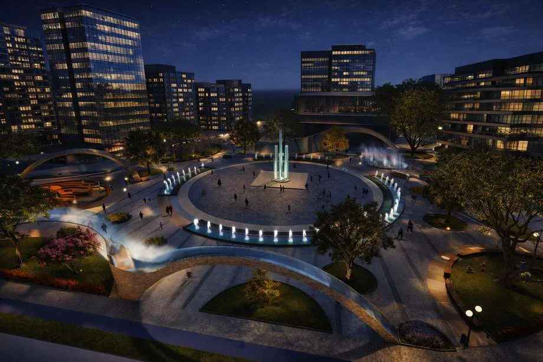
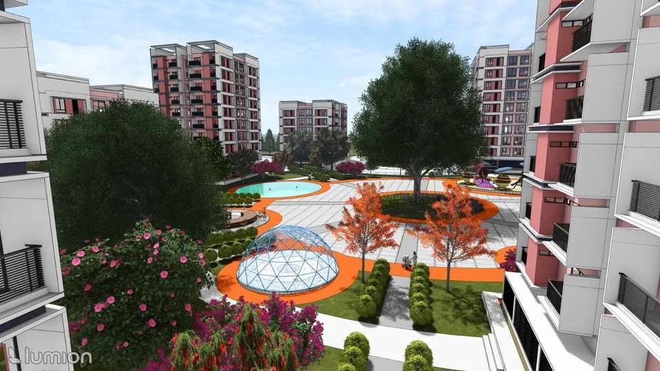
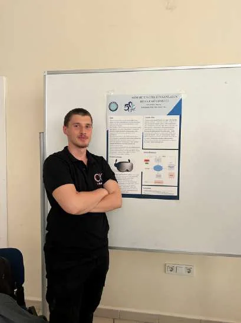

Site before form
Terrain, ecology and everyday use come before the first design decision.
Landscape architecture, from the first site reading to the spaces we share. I’m Mirza Dugopoljac, a student at Bursa Uludağ University working across design, GIS and visualization.
One landscape. Three ways of seeing.
Paths, planted edges and gathering spaces. The plan makes the relationships visible.
Explore the case study ↗Terrain, ecology and everyday use come before the first design decision.
From a city’s green infrastructure to the detail of a place to sit.
Plans, sections and visual studies make the thinking open to inspection.
Public spaces, residential gardens and shared ground. Explore the projects through plans and lived atmosphere.
Public space · LandscapeSite analysis and GIS — reading natural and cultural systems before deciding what should change.
Site analysis · GISSmall structures, urban furniture and technical studies. Looking closer at how an idea meets everyday use.
Objects · Technical designSpatial concepts, circulation, planting and shared outdoor life.
Plan / Plant / ConnectNatural and cultural analysis, mapping and landscape strategy.
Read / Map / SynthesizePlans, sections and details that connect the idea to its construction.
Draw / Test / RefineModels and images to explore material, light and atmosphere.
Model / Light / Compose
A public landscape organized around movement, gathering, water and atmosphere.
Open case file ↗
Natural and cultural layers translated into landscape strategy, green infrastructure and resilience.
Open case file ↗
Shared outdoor space designed as the social infrastructure of everyday residential life.
Open case file ↗I’m a Landscape Architecture student at Bursa Uludağ University. My work moves between design, planning, planting, GIS and visualization, with a growing interest in how analysis becomes a strong spatial idea.
I’m most interested in the moment when analysis becomes a spatial decision: when a path, planting system, edge or structure starts solving more than one problem at once.

This planning study reads topography, slope, aspect, hydrology, geology, soil, climate, ecology, land use, transportation and cultural values together. The synthesis turns those layers into landscape strategies rather than treating mapping as a final output.
Open case file ↗ P-03 / Technical DesignThe seating unit combines resting, shade and interaction in one object. A solar canopy supplies energy to interactive ground elements while the circular seating form creates a more social, semi-enclosed experience.
Open case file ↗Have a project, a collaboration or an opportunity in mind? I’d love to hear about it.
Get in touch ↗ mirzaadc@gmail.com